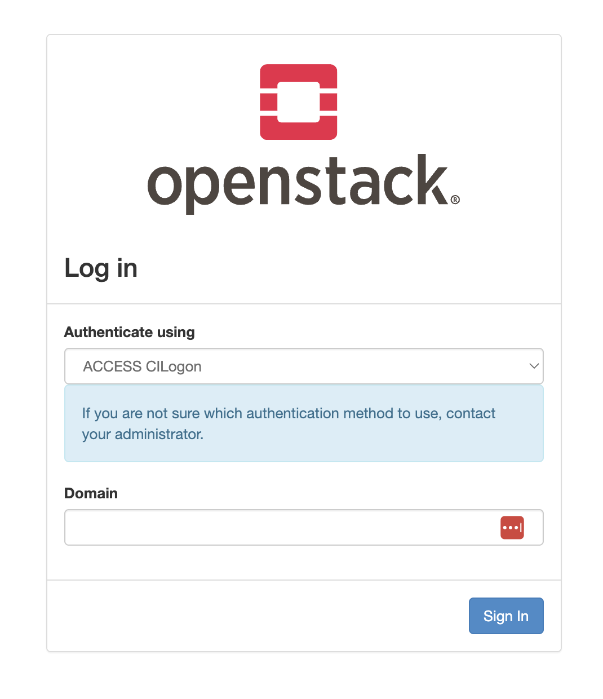
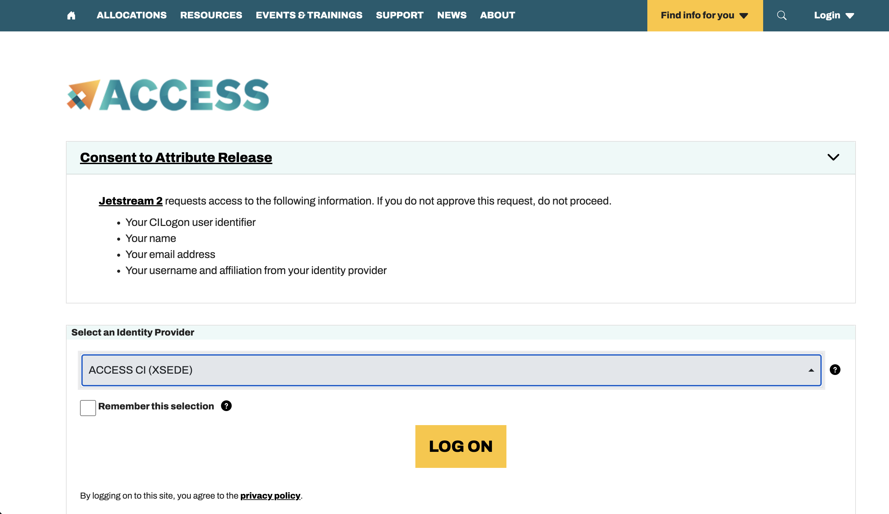
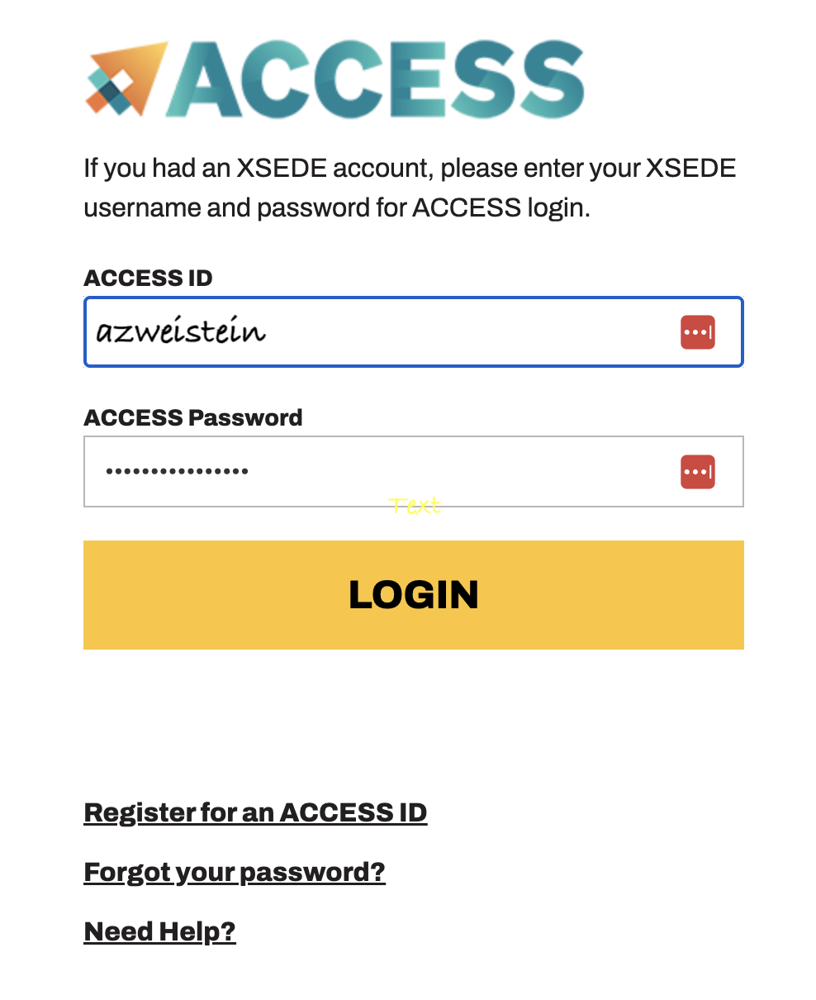
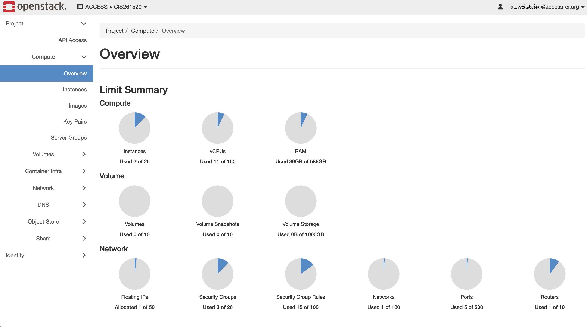
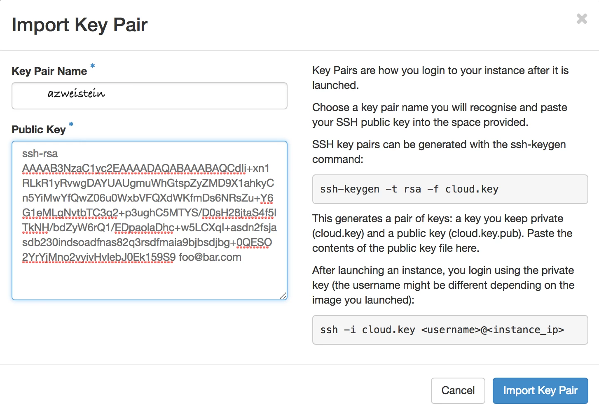
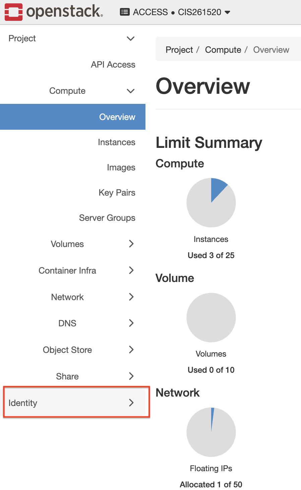
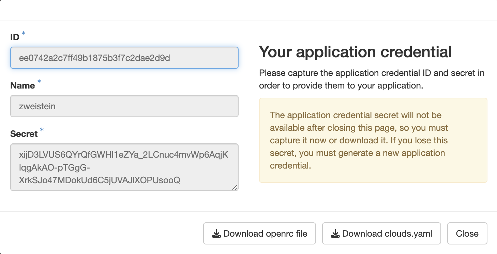
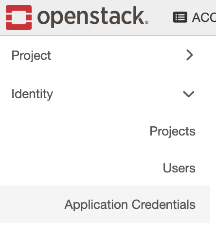
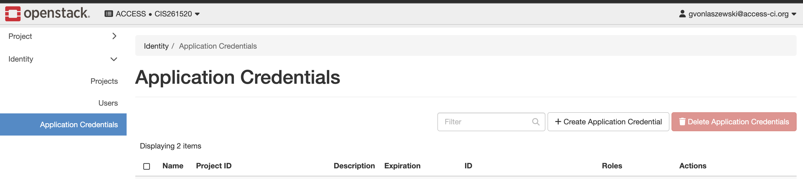
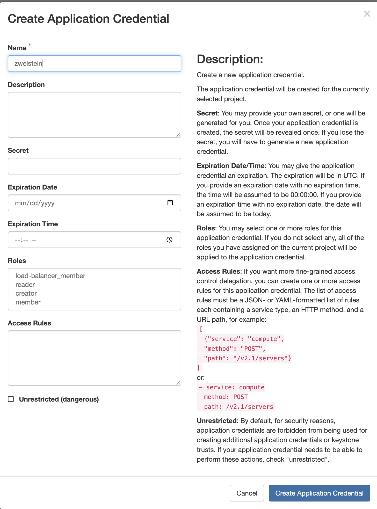

Jetstream2 Quick Start Guide
This tutorial provides a step-by-step guide to getting started with Jetstream2, covering both the Horizon Web UI and the Command-Line Interface (CLI).
Part 1: Getting Started with Horizon (Web UI)
The Horizon dashboard is a convenient way for beginners to manage your Jetstream2 resources. It is suitable for creating small environments, but should not be used when automating deployments.
To be able to use the command line tools we also need to start with horizon to obtain the credentials.
1. Log In
Go to the Jetstream2 login page and login with your ACCESS CILogon or other authentication frameworks you have registered with your account. In general it will be ACCESS CILOGON.
Go to https://docs.jetstream-cloud.org/ui/horizon/login and you will see the Login Screen.
Follow the login process. We provide here some screenshots.
{kind=link}

Press the Sign in Button.
{kind=link}

Press the Log On button.
{kind=link}

Fill out the form and Login.
Once logged in, you will see the Horizon dashboard:
{kind=link}

2. Add an SSH Key Pair
Before you can launch any virtual machine that you like to login to, you must add an SSH public key. This allows you to securely log into your VM after it's created.
Detailed instructions can be found here: https://docs.jetstream-cloud.org/ui/horizon/ssh_keys/
When uploading the key pair we recommend to name it after your login ID or your first and last name. For programming and scripting it is best to use a name that does not contain spaces and keep it short. As we share a project the names must be unique.
{kind=link}

3. Create Application Credentials
To use the command-line tools, you'll need application credentials.
Warning
There is a bug in the deployment of the Horizon interface that you can not download the credentials from the upper right menu.
Hence you need to follow tis workflow:
- Navigate to the Identity menu.
{kind=link}

Click on Identity and you will see the Identity menu
{kind=link}

- Create your credentials.
Click on the Applications Credentials menu entry
{kind=link}

You will now be redirectet to the credentials form, that includes a list of all credentials.
{kind=link}

Click on the Create Applications Credentails button to create a new credential you can use.
Please note you only need one for this class, but could create more dependent on if you need to restrict access to services offered by the cloud.
{kind=link}

Warning
do not click on unrestricted.
Make sure you do not expose your credentials or give it to other users. If they are exposed, delet them and create a new one.
4. Download the credential files.
Once created, you will be able to download your clouds.yaml file or an openrc.sh script. They will have different names, but we suggest to rename them accordingly so it is easier to follow this tutorial.
Please download them now and place them in the folder ~/.config/openstack. Make sure you have the folder and create it with
Detailed configuration instructions are provided in Part 2.
Part 2: Configuring the Command-Line Interface (CLI)
We assume you have placed your clouds in the ~/.config/openstack/clouds.yaml. We will from now on only use that.
The CLI is more powerful and efficient for managing resources, especially for automation.
Prerequisites
We need to make sure we fulfill the following prerequisits. On Windows we need to install gitbash so you can use the same commands as we use on Linux and MacOS to keep the example simple.
Tip
Projects in class should avoid using powershell in order to provide maximum portability across the OSes. We believe there are little to no reasons to use powershell even if you use Windows.
1. Use a Python Virtual Environment
To avoid impacting your system Python installation, it is highly recommended to use a virtual environment.
An example to create one is
Once activated, you can proceed to install the necessary tools.First Install the OpenStack client:
2. Authentication Configuration
There are two main ways to authenticate your CLI session. While openrc.sh is common if you have only one cloud, clouds.yaml is the recommended best practice.
Option A: Using clouds.yaml
Save your downloaded clouds.yaml file to ~/.config/openstack/clouds.yaml. The OpenStack CLI automatically checks this directory, so you don't need to source any files in every new terminal session.
Handling a Single Cloud:
An example clouds.yaml for a single cloud looks like:
clouds:
openstack:
auth:
auth_url: https://js2.jetstream-cloud.org:5000/v3/
application_credential_id: "your-credential-id"
application_credential_secret: "your-credential-secret"
region_name: "IU"
interface: "public"
identity_api_version: 3
auth_type: "v3applicationcredential"
Handling Multiple Clouds:
If you have accounts on multiple clouds (e.g., Jetstream and Chameleon), merge them into one clouds.yaml file and give each one a unique name:
clouds:
jetstream:
auth:
auth_url: https://js2.jetstream-cloud.org:5000/v3/
application_credential_id: "your-jetstream-id"
application_credential_secret: "your-jetstream-secret"
region_name: "IU"
interface: "public"
identity_api_version: 3
auth_type: "v3applicationcredential"
chameleon:
auth:
auth_url: https://...
application_credential_id: "your-chameleon-id"
application_credential_secret: "your-chameleon-secret"
region_name: "..."
interface: "public"
identity_api_version: ...
auth_type: ...
Option B: Using openrc.sh
Alternatively, you can save your credentials in an openrc.sh file (e.g., ~/.config/openstack/openrc.sh) and load it into your current session:
Example openrc.sh content:
#!/usr/bin/env bash
export OS_AUTH_TYPE=v3applicationcredential
export OS_AUTH_URL=https://js2.jetstream-cloud.org:5000/v3/
export OS_IDENTITY_API_VERSION=3
export OS_REGION_NAME="IU"
export OS_INTERFACE=public
export OS_APPLICATION_CREDENTIAL_ID=your-credential-id
export OS_APPLICATION_CREDENTIAL_SECRET=your-credential-secret
In case of multiple clouds you would need multiple files and name them accordingly such as:
- ~/.config/openstack/openrc-jetstream.sh
- ~/.config/openstack/openrc-chameleon.sh
Warning
Never place the clouds.yaml or openrc.sh files into your current directory. Always make sure the ~/.config directory tree is properly protected.
Now we can verify if the setup works and we can access the openstack cloud.
To do so we simply list a common function such as listing all available images in the openstack cloud.
If it works you will see something like
+--------------------------------------+----------------------------------------+--------+
| ID | Name | Status |
+--------------------------------------+----------------------------------------+--------+
| e6fd0368-aba2-432f-91a6-e44753bf870b | Featured-Minimal-Ubuntu22 | active |
| 94fe2ee9-c1c3-4a38-9cfa-5c3e5b5daca8 | Featured-Minimal-Ubuntu24 | active |
| f6eb2462-7a70-4490-97a8-9ba8d3829bf7 | Featured-RockyLinux10 | active |
| e812b4dd-8dc5-483c-9451-8a7e9956bfce | Featured-RockyLinux9 | active |
| 6eefa5f4-89c8-4206-bbb4-5c99e3a7eb70 | Featured-Ubuntu22 | active |
| 6cbb4cfe-92e2-403c-8cf3-d578c654293c | Featured-Ubuntu24 | active |
| bbad1676-40f1-485d-8575-ca9eac7e211e | Windows-Server-2022-JS2-Beta | active |
| b59ca85b-41a4-42f0-b7e2-804861cf38c8 | sev-noble-server-amd64 | active |
| a49f22ed-4ba1-46a5-9569-5dae8f626eed | ubuntu-jammy-kube-v1.28.13-240828-1652 | active |
| 52506e1e-30e0-43d1-bd26-1ca68f8422c3 | ubuntu-jammy-kube-v1.29.8-240828-1652 | active |
| 9625520a-b96c-46e5-b6d5-4f3f995dbee6 | ubuntu-jammy-kube-v1.30.4-240828-1653 | active |
| 784ef7b3-a05a-4b04-bbb6-8d246d039e35 | ubuntu-jammy-kube-v1.31.0-240828-1652 | active |
| 53a1b751-7353-42f7-a1e3-6fb9f298a174 | ubuntu-jammy-kube-v1.32.6-250626-0849 | active |
| 74846576-bb7e-4ca9-897e-8f33e8fd84d1 | ubuntu-jammy-kube-v1.33.2-250626-0848 | active |
| 18895dd1-6e94-482b-9a62-9573328c7429 | ubuntu-jammy-kube-v1.34.8-260518-1604 | active |
+--------------------------------------+----------------------------------------+--------+
As we at one point want to also process data retrieved from the cloud, one way to do this is to export the data in various formats. For example we can export it with the options -f yaml or -f json
Part 3: Launching Your First Virtual Machine
Now that your environment is configured, follow these steps to provision a VM.
1. Identify Resources
Before creating the server, you need to find the names or IDs of the hardware size (flavor), operating system (image), and your key pair.
- Find a flavor:
(Note the name, e.g.,
m3.smallorjetstream.medium)
Expected Output:
+----+-----------+--------+------+-----------+-------+-----------+
| ID | Name | RAM | Disk | Ephemeral | VCPUs | Is Public |
+----+-----------+--------+------+-----------+-------+-----------+
| 1 | m3.tiny | 3072 | 20 | 0 | 1 | False |
| 2 | m3.small | 6144 | 20 | 0 | 2 | False |
| 3 | m3.quad | 15360 | 20 | 0 | 4 | False |
| 4 | m3.medium | 30720 | 60 | 0 | 8 | False |
| 5 | m3.large | 61440 | 60 | 0 | 16 | False |
| 7 | m3.xl | 128000 | 60 | 0 | 32 | False |
| 8 | m3.2xl | 256000 | 60 | 0 | 64 | False |
+----+-----------+--------+------+-----------+-------+-----------+
- Find an image:
Featured-Ubuntu-24.04)
Expected Output:
+---------------------------------------+----------------------+-----------+
| ID | Name | Status |
+---------------------------------------+----------------------+-----------+
| 12345678-1234-1234-1234-1234567890ab | Featured-Ubuntu-24.04 | active |
| 87654321-4321-4321-4321-ba0987654321 | Featured-CentOS-9 | active |
+---------------------------------------+----------------------+-----------+
- Verify your SSH key name:
Expected Output:
+-----------------------+----------------------+
| Name | Public Key |
+-----------------------+----------------------+
| your-ssh-key-name | ssh-rsa AAAAB3... |
+-----------------------+----------------------+
2. Create and Launch the Server
Run the openstack server create command.
Important
Replace the placeholders in this document
- your-ssh-key-name
- your-login-id
with your actual values.
openstack server create \
--flavor m3.small \
--image "Featured-Ubuntu-24.04" \
--key-name your-ssh-key-name \
--security-group default \
--wait \
your-login-id-vm-1
--wait flag ensures the command blocks until the instance is ACTIVE.
Expected Output:
The command will return once the server is created. You can verify it with:
Expected Output:
+-----------+---------+
| Field | Value |
+-----------+---------+
| status | ACTIVE |
+-----------+---------+
Expected Output: The command will return once the server is created. You can verify it with:
Expected Output:
+-----------+---------+
| Field | Value |
+-----------+---------+
| status | ACTIVE |
+-----------+---------+
3. Allocate and Attach a Floating IP
Jetstream2 instances require a public floating IP to be accessible via the internet.
- Create a public IP address:
floating_ip_address returned, e.g., 149.165.x.x)
Expected Output:
+---------------------+--------------------------------------+
| Floating IP Address | Fixed IP Address |
+---------------------+--------------------------------------+
| 149.165.10.20 | 10.0.0.15 |
+---------------------+--------------------------------------+
- Attach the IP to your server:
Expected Output: The command usually returns no output upon success. You can verify the attachment using:
openstack server show your-login-id-vm-1 -c addresses
+---------------------------------------------------------------------------------------------------+
| addresses |
+---------------------------------------------------------------------------------------------------+
| [{'addr': '10.0.0.15', 'version': 4, 'external': '149.165.10.20'}] |
+---------------------------------------------------------------------------------------------------+
4. Log Into Your VM
Finally, SSH into your instance.
-
Ensure your private key permissions are secure:
-
SSH using the default username (e.g.,
ubuntufor Ubuntu images):
Connectivity Troubleshooting
If you encounter a Connection timed out error when trying to SSH, it is likely that Port 22 is blocked by the security group.
You can open Port 22 for all IP addresses using this command:
Alternatively, you can add the SSH rule via the Horizon UI under Network \(\rightarrow\) Security Groups \(\rightarrow\) Manage Rules.5. Manage VM Power State
If you want to stop your VM to save resources without deleting it entirely, you can manage its power state.
-
Stop the VM:
-
Start the VM again:
-
Check the current status:
Expected Output:
+---------------------------------------------------------------------------------------------------+------------------+-----------+-------------------+----------------------------------------------------------------------------------------------------------+
| ID | Name | Status | VM State | Host |
+---------------------------------------------------------------------------------------------------+------------------+-----------+-------------------+----------------------------------------------------------------------------------------------------------+
| 87654321-432... | your-login-id-vm-1 | ACTIVE | running | compute-node-01 |
+---------------------------------------------------------------------------------------------------+------------------+-----------+-------------------+----------------------------------------------------------------------------------------------------------+
Part 4: Resource Cleanup
To avoid wasting your project quota, always delete your resources when you are finished with them.
1. Delete the Virtual Machine
Replace your-login-id-vm-1 with the name you gave your server:
2. Release the Floating IP
Deleting the server does not automatically remove the Floating IP. You must delete it separately:
- Find your Floating IP:
- Delete the IP:
Appendix: CLI Tips
1. Using the --os-cloud Flag
If you have multiple clouds defined in your clouds.yaml, you can specify which one to use without setting environment variables:
2. Setting a Session Default
To avoid typing --os-cloud every time in a specific terminal session, export the OS_CLOUD environment variable:
openstack commands will default to your Jetstream configuration.
3. Restricting SSH Access to Your IP Address
For better security, instead of allowing all IP addresses (0.0.0.0/0) to connect to your VM, you can restrict access to only your own laptop's public IP address.
1. Find your public IP address
Use curl to find your current external IP address:
1.2.3.4)
2. Create a specific security rule
Replace 1.2.3.4 with the IP address you just found:
3. Remove the "Allow All" rule (Optional but Recommended)
If you previously added the 0.0.0.0/0 rule, you should remove it to ensure your VM is secure: